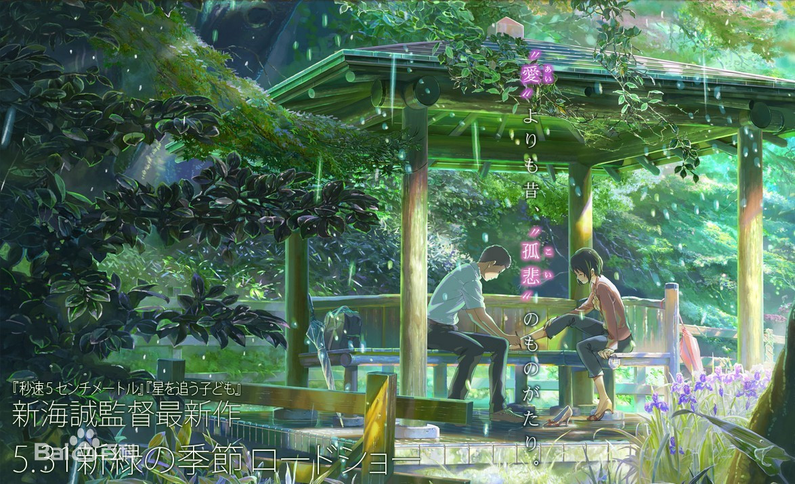

「言叶之庭」

《言叶之庭》由曾执导过《星之声》、《秒速5厘米》、《追逐繁星的孩子》等动画电影的新海诚掌镜，
影片于2013年5月31日在台湾、香港、日本同步上映。
《言叶之庭》的故事发生在现代东京，故事讲述了以制鞋人为目标的少年秋月和神秘女子雪野的恋爱故事。
故事源于万叶集开篇的“孤悲”之恋，作品中透露出鞋、万叶集、日本庭园、雨等因素。
- 监督・脚本・原作・分镜・演出・撮影监督・色彩设计・编集：新海诚
- 制片人：川口典孝
- 作画监督・角色设计：土屋坚一
- 美术监督：泷口比吕志
- 音乐：KASHIWA Daisuke（柏大辅）
- 制作人：伊藤耕一郎、酒井雄一
- 色彩译计：三木阳子、新海诚
- 音响导演：山田阳
- 脚本协力：松田沙也
- 制作：COMICS WAVE FILM
- 发行：东宝映像事业部
职员表
- 秋月孝雄:入野自由
- 雪野百香里:花泽香菜
- 秋月怜美:平野文
- 秋月翔太:前田刚
- 寺本梨花:寺崎裕香
- 松本:井上优
- 佐藤 :潘惠美
- 相泽祥子:小松未可子